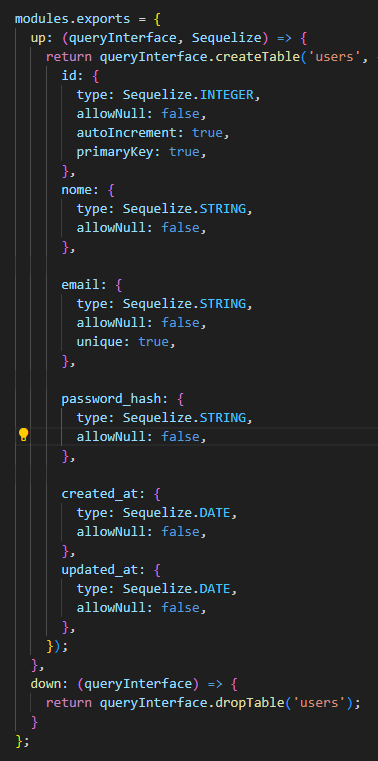
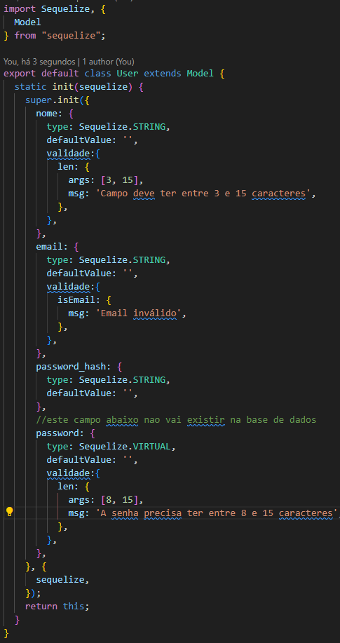
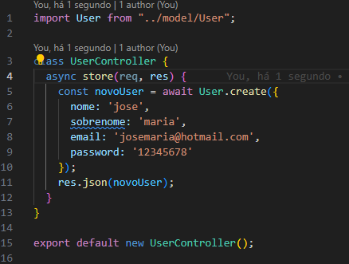
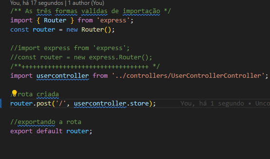

Criando Usuario
Neste exemplo será criado uma nova feature para complementar a nossa aplicação, Esta criação de
usuario será uma parte fechada onde será uma parte particular do usuarios logados.
Primeiro passo é criar uma migration
npm migration:create --name=users
Ela será criada dento da pasta:
database/migrations/nomedoarquivo.js
no novo arquivo será preciso adicionar os seguintes dados:

pós todas as configurações adicionadas acima, agora poderá fazer a migration
npx sequelize db:migrate
se caso estiver errado na tabela e queira voltar ao estado anterior é só fazer:
npx sequelize db:migrate:undo
Criando Model
Na pasta de model crie um novo arquivo com nome de User.js ,segui abaixo todas
informações para que possa funcionar

Nesta tabela repara-se que tem uma propreiedade hash para embaralhar as letras, e criar tipo uma
criptografia para senha, para isso será preciso instalar o bcryptjs
npm install bcryptjs
Agora será criado o Controller

Nos controllers você pode usar ate 5 principais metódos:
1- index: quando precisa listar todos os usuarios usa- se: GET
2- create e store: cria um novo usuario: POST
3- delete: apaga usuario: DELETE
4- show: mostra um usuario: GET
5- update: atualiza um usuario: PATCH(para alterar somente um valor) ou PUT(substitui
varios valores)
Criando a rota

repara-se q esta sendo usado store, com isso ja esta sendo adicionado o post
Agora o proximo passo é carregar essa rota no app